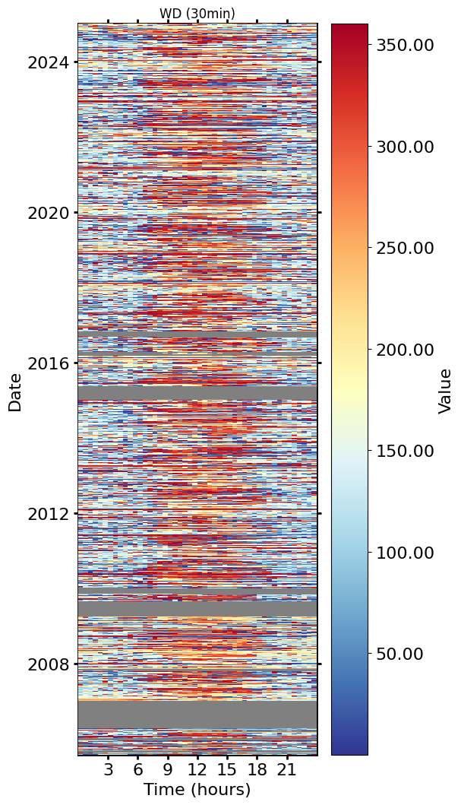

Info from CH-CHA fieldbook entry:
I compared histograms of wind directions between 2005 and 2023 and found that a sonic orientation of 7° offset to north yields very similar results across years. It is therefore possible the the sonic orientation on this day was also close to 7°.
Here are results from a comparison of annual wind direction histograms (with bin width of 1°) to a reference period (2006-2009), all wind directions were calculated with a north offset of 7°, then a histogram was calculated for each year. The OFFSET describes how many degrees have to be added (or subtracted) to the half-hourly wind direction to yield a histogram that is most similar to the reference. All OFFSETS are small, which indicates that the wind directions are in good agreement.
YEAR OFFSET
0 2005.0 1.0 1 2006.0 0.0 2 2007.0 -2.0 3 2008.0 -2.0 4 2009.0 0.0 5 2010.0 2.0 6 2011.0 6.0 7 2012.0 1.0 8 2013.0 1.0 9 2014.0 1.0 10 2015.0 -3.0 11 2016.0 3.0 12 2017.0 4.0 13 2018.0 1.0 14 2019.0 -1.0 15 2020.0 -1.0 16 2021.0 -1.0 17 2022.0 1.0 18 2023.0 -2.0
from diive.pkgs.corrections.winddiroffset import WindDirOffset
from diive.core.plotting.heatmap_datetime import HeatmapDateTime
from diive.core.io.files import load_parquet
SOURCEFILE = r"..\0_data\OPENLAG-IRGA-Level-0_fluxnet_2005-2024\merged_all_years.parquet"
df = load_parquet(filepath=SOURCEFILE)
df
Loaded .parquet file ..\0_data\OPENLAG-IRGA-Level-0_fluxnet_2005-2024\merged_all_years.parquet (0.398 seconds).
--> Detected time resolution of <30 * Minutes> / 30min
| AIR_CP | AIR_DENSITY | AIR_MV | AIR_RHO_CP | AOA_METHOD | AXES_ROTATION_METHOD | BADM_HEIGHTC | BADM_INSTPAIR_EASTWARD_SEP_GA_CH4 | BADM_INSTPAIR_EASTWARD_SEP_GA_CO2 | BADM_INSTPAIR_EASTWARD_SEP_GA_H2O | BADM_INSTPAIR_EASTWARD_SEP_GA_N2O | BADM_INSTPAIR_EASTWARD_SEP_GA_NONE | BADM_INSTPAIR_HEIGHT_SEP_GA_CH4 | BADM_INSTPAIR_HEIGHT_SEP_GA_CO2 | BADM_INSTPAIR_HEIGHT_SEP_GA_H2O | ... | W_T_SONIC_COV_IBROM_N0004 | W_T_SONIC_COV_IBROM_N0008 | W_T_SONIC_COV_IBROM_N0016 | W_T_SONIC_COV_IBROM_N0032 | W_T_SONIC_COV_IBROM_N0065 | W_T_SONIC_COV_IBROM_N0133 | W_T_SONIC_COV_IBROM_N0277 | W_T_SONIC_COV_IBROM_N0614 | W_T_SONIC_COV_IBROM_N1626 | W_UNROT | W_U_COV | W_VM97_TEST | W_ZCD | ZL | ZL_UNCORR | |
|---|---|---|---|---|---|---|---|---|---|---|---|---|---|---|---|---|---|---|---|---|---|---|---|---|---|---|---|---|---|---|---|
| TIMESTAMP_MIDDLE | |||||||||||||||||||||||||||||||
| 2005-07-26 15:45:00 | NaN | NaN | NaN | NaN | NaN | NaN | NaN | NaN | NaN | NaN | NaN | NaN | NaN | NaN | NaN | ... | NaN | NaN | NaN | NaN | NaN | NaN | NaN | NaN | NaN | NaN | NaN | NaN | NaN | NaN | NaN |
| 2005-07-26 16:15:00 | 1005.85 | 1.10820 | 0.026137 | 1114.68 | 0.0 | 1.0 | 0.5 | NaN | NaN | NaN | NaN | NaN | NaN | NaN | NaN | ... | NaN | NaN | NaN | NaN | NaN | NaN | NaN | NaN | NaN | 0.032976 | -0.018731 | 800000001.0 | 101.0 | 0.040254 | 0.040012 |
| 2005-07-26 16:45:00 | 1005.85 | 1.10882 | 0.026122 | 1115.30 | 0.0 | 1.0 | 0.5 | NaN | NaN | NaN | NaN | NaN | NaN | NaN | NaN | ... | NaN | NaN | NaN | NaN | NaN | NaN | NaN | NaN | NaN | 0.032289 | -0.023372 | 800000000.0 | 65.0 | 0.045414 | 0.045130 |
| 2005-07-26 17:15:00 | 1005.84 | 1.10896 | 0.026119 | 1115.44 | 0.0 | 1.0 | 0.5 | NaN | NaN | NaN | NaN | NaN | NaN | NaN | NaN | ... | NaN | NaN | NaN | NaN | NaN | NaN | NaN | NaN | NaN | 0.045077 | -0.029726 | 800000001.0 | 32.0 | 0.046117 | 0.045808 |
| 2005-07-26 17:45:00 | 1005.85 | 1.10853 | 0.026129 | 1115.01 | 0.0 | 1.0 | 0.5 | NaN | NaN | NaN | NaN | NaN | NaN | NaN | NaN | ... | NaN | NaN | NaN | NaN | NaN | NaN | NaN | NaN | NaN | 0.047853 | -0.031755 | 800000000.0 | 27.0 | 0.018531 | 0.018420 |
| ... | ... | ... | ... | ... | ... | ... | ... | ... | ... | ... | ... | ... | ... | ... | ... | ... | ... | ... | ... | ... | ... | ... | ... | ... | ... | ... | ... | ... | ... | ... | ... |
| 2024-12-31 22:45:00 | 1004.41 | 1.25419 | 0.023084 | 1259.72 | 0.0 | 1.0 | 0.5 | NaN | 34.0 | 34.0 | NaN | NaN | NaN | 0.0 | 0.0 | ... | 0.000763 | 0.001235 | 0.001807 | 0.002463 | 0.003140 | 0.003740 | 0.004241 | 0.004626 | 0.004886 | 0.042161 | -0.018129 | 800000001.0 | 62.0 | -0.065476 | -0.067415 |
| 2024-12-31 23:15:00 | 1004.47 | 1.25527 | 0.023064 | 1260.88 | 0.0 | 1.0 | 0.5 | NaN | 34.0 | 34.0 | NaN | NaN | NaN | 0.0 | 0.0 | ... | 0.001333 | 0.002168 | 0.003103 | 0.004044 | 0.004919 | 0.005626 | 0.006149 | 0.006531 | 0.006785 | 0.048551 | -0.020766 | 800000000.0 | 98.0 | -0.062634 | -0.064302 |
| 2024-12-31 23:45:00 | 1004.53 | 1.25646 | 0.023042 | 1262.15 | 0.0 | 1.0 | 0.5 | NaN | 34.0 | 34.0 | NaN | NaN | NaN | 0.0 | 0.0 | ... | 0.001705 | 0.002606 | 0.003697 | 0.004808 | 0.005782 | 0.006554 | 0.007178 | 0.007689 | 0.008067 | 0.049272 | -0.031205 | 800000000.0 | 56.0 | -0.047652 | -0.048824 |
| 2025-01-01 00:15:00 | 1004.57 | 1.25718 | 0.023029 | 1262.92 | 0.0 | 1.0 | 0.5 | NaN | 34.0 | 34.0 | NaN | NaN | NaN | 0.0 | 0.0 | ... | 0.001511 | 0.002259 | 0.003114 | 0.003939 | 0.004635 | 0.005175 | 0.005586 | 0.005880 | 0.006068 | 0.021029 | -0.014072 | 800000001.0 | 227.0 | -0.109298 | -0.111425 |
| 2025-01-01 00:45:00 | 1004.50 | 1.25592 | 0.023052 | 1261.57 | 0.0 | 1.0 | 0.5 | NaN | 34.0 | 34.0 | NaN | NaN | NaN | 0.0 | 0.0 | ... | 0.000915 | 0.001418 | 0.001958 | 0.002442 | 0.002822 | 0.003093 | 0.003278 | 0.003398 | 0.003466 | 0.012351 | -0.005107 | 800000011.0 | 620.0 | -0.255549 | -0.262868 |
340723 rows × 551 columns
col = 'WD'
wd = df[col].copy()
# Prepare input data
wd = wd.loc[wd.index.year <= 2024]
wd = wd.dropna()
wds = WindDirOffset(winddir=wd, offset_start=-50, offset_end=50, hist_ref_years=[2006, 2009], hist_n_bins=360)
yearlyoffsets_df = wds.get_yearly_offsets()
print(yearlyoffsets_df)
print(wd)
HeatmapDateTime(series=wd).show()
# s_corrected = wds.get_corrected_wind_directions()
# print(s_corrected)
# HeatmapDateTime(series=s_corrected).show()
Working on year 2005 ...
Working on year 2006 ...
Working on year 2007 ...
Working on year 2008 ...
Working on year 2009 ...
Working on year 2010 ...
Working on year 2011 ...
Working on year 2012 ...
Working on year 2013 ...
Working on year 2014 ...
Working on year 2015 ...
Working on year 2016 ...
Working on year 2017 ...
Working on year 2018 ...
Working on year 2019 ...
Working on year 2020 ...
Working on year 2021 ...
Working on year 2022 ...
Working on year 2023 ...
Working on year 2024 ...
YEAR OFFSET
0 2005.0 1.0
1 2006.0 0.0
2 2007.0 -2.0
3 2008.0 -2.0
4 2009.0 0.0
5 2010.0 2.0
6 2011.0 6.0
7 2012.0 1.0
8 2013.0 1.0
9 2014.0 1.0
10 2015.0 1.0
11 2016.0 3.0
12 2017.0 4.0
13 2018.0 1.0
14 2019.0 -1.0
15 2020.0 -1.0
16 2021.0 -1.0
17 2022.0 1.0
18 2023.0 -2.0
19 2024.0 1.0
TIMESTAMP_MIDDLE
2005-07-26 16:15:00 337.570
2005-07-26 16:45:00 355.535
2005-07-26 17:15:00 326.946
2005-07-26 17:45:00 322.329
2005-07-26 18:15:00 317.961
...
2024-12-31 21:45:00 192.547
2024-12-31 22:15:00 191.328
2024-12-31 22:45:00 183.899
2024-12-31 23:15:00 198.289
2024-12-31 23:45:00 200.110
Name: WD, Length: 298099, dtype: float64
L:\Sync\luhk_work\20 - CODING\21 - DIIVE\diive\diive\core\plotting\heatmap_base.py:92: UserWarning: FigureCanvasAgg is non-interactive, and thus cannot be shown
self.fig.show()

yearlyoffsets_df
| YEAR | OFFSET | |
|---|---|---|
| 0 | 2005.0 | 1.0 |
| 1 | 2006.0 | 0.0 |
| 2 | 2007.0 | -2.0 |
| 3 | 2008.0 | -2.0 |
| 4 | 2009.0 | 0.0 |
| 5 | 2010.0 | 2.0 |
| 6 | 2011.0 | 6.0 |
| 7 | 2012.0 | 1.0 |
| 8 | 2013.0 | 1.0 |
| 9 | 2014.0 | 1.0 |
| 10 | 2015.0 | 1.0 |
| 11 | 2016.0 | 3.0 |
| 12 | 2017.0 | 4.0 |
| 13 | 2018.0 | 1.0 |
| 14 | 2019.0 | -1.0 |
| 15 | 2020.0 | -1.0 |
| 16 | 2021.0 | -1.0 |
| 17 | 2022.0 | 1.0 |
| 18 | 2023.0 | -2.0 |
| 19 | 2024.0 | 1.0 |